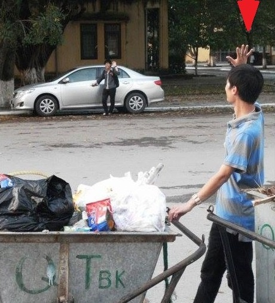

Bằng lăng đã nở 6 mùa
5 mùa đi học, một mùa lao công :3
Ra trường thất nghiệp lông bông
Về trường “công tác” kiếm đồng tiền tiêu

Kĩ năng chẳng có bao nhiêu
Bách Khoa nên cứ tự kiêu mình tài
Năm năm cứ ngỡ là dài
“Hôm nay chơi đã, còn mai lo gì”
Ra trường, tuyển dụng, đi thi
Kĩ năng chẳng có cái gì, trượt “nuôn” :(
Gia đình hụt hẫng thật buồn
Nhưng vẫn căn dặn, phải luôn kiên cường
Cuối cùng được giữ lại trường
Được làm cán bộ môi trường Bách Khoa.
Thơ sưu tầm nhưng sao nó cũng giống thân phận mình quá !!!
Mình chỉ là một người bình thường trong thế giới này!
Blog DeveloperKeep - Đây là sản phẩm của mình mình!
Nơi viết lách theo sở thích.